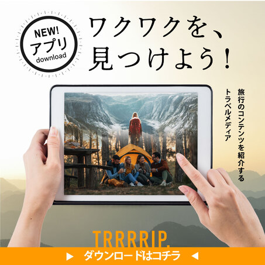
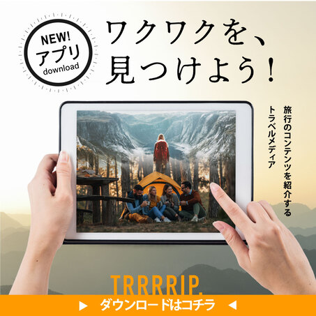

元ネイリストです。
退職後は営業事務や一般事務職の経験をし現在コーヒー屋の奥さんと２児の母をしています。
細かい作業を黙々とすることが好きで趣味は手芸全般です。
やりたいことや好きを形に表現できる楽しさや喜びを知っています。
だから、1人1人の思いをじっくり聞き取り一緒に形にするお手伝いをしたいと思います。


デザインの基礎を学び様々なテーマに合わせてデザインカンプを作成することが出来ます。
またユーザ目線を忘れずに使いやすいデザインをご提案します。


 
